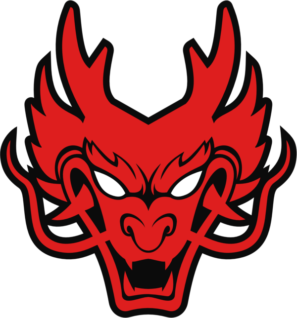

- EQUIPOS DE EL COMPETITIVO
HOKORI
Es considerado el mejor equipo de left 4 dead ya que partiparon en torneos no aficiales de la empresa cosa que no hacen sino en torneos internacionales organizados por un stream llamdo LALO Z, en la actualidad participar en un torneo de lalo es un homor ya que solo busca los mejores equipos del mundo HOKORI gano su torneo 3 veces y juega en elo alto, lalo organiza tanto torneos para bajos como para altos siendo el de altos donde solo entram equipos profecionales.
FEAR FACTORY
No fue un equipo que dio mucho de que hablar pero sin duda es un equipo a la altura de HOKORI siendo que les gano varias veces y tambien ellos perdieron varias veces donde les ganaron una fianl a HOKORI coronandose solo 2 veces campeon de los torneos de lalo, es el unico equipo que no tiene una nacionalidad como tal ya que comforman varias personas de diferentes nacionalidades.
YAKUZA GAMING
Es el equipo mas pro de bolivia ni una palabra mas :b, tuvo su 1era participacion en el torneo de Darknight, esta conformado por 1 un camba y 3 kollas (MAS BOLIVIANOS QUE EL PAN DE BATALLA.):b
ANDY
Nacido en La Paz, ciudad de El Alto el 25 de diciembre de 2005, tiene actualmente 18 años. Jugador experimentado en videojuegos, va jugando desde los 8 años de edad. Conocedor de los paquetes de office: Word, Excel, Power Point, etc. Trabajo en su negocio familiar, que es un internet con un snack de comida rápida. Salió de la secundaria el año 2023 y ahora está especializándose en Administración de Empresas en la prestigiosa universidad de San Andrés "UMSA".
LIMBER
La MP5 es un arma tipo subfusil del videojuego de Valve "Counter-Strike: Source" introducida en Left 4 Dead 2 que solo estaba disponible en la versión alemana del juego. No fue sino hasta el 24 de setiembre del 2020 que la MP5 fue introducida en la Last Stand Update.